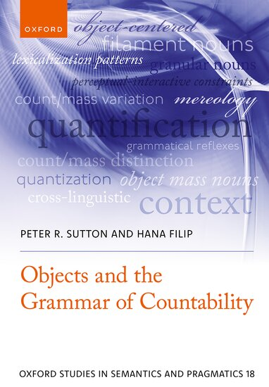
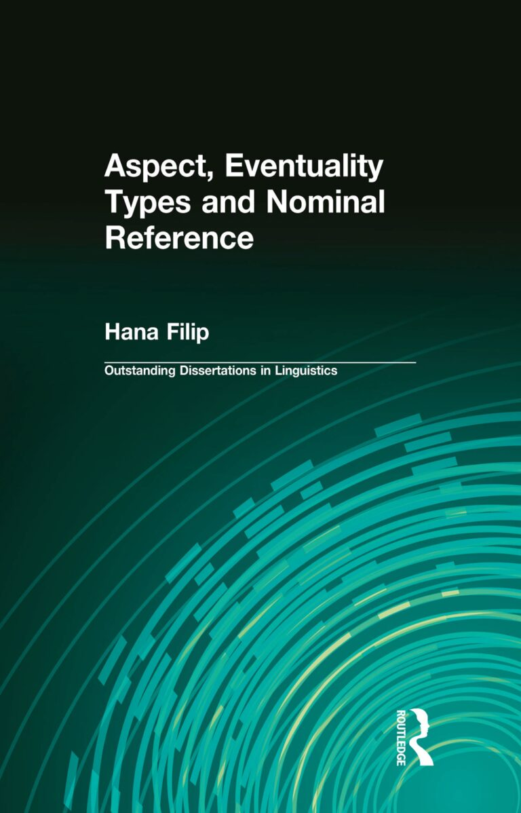

Professor of Semantics · Emerita
Hana
Filip
Department of Linguistics,
Heinrich Heine Universität Düsseldorf
Düsseldorf, Germany
01
About
Researching
meaning in language.
I am a linguist specializing in semantics, the study of meaning in language.
My research is motivated by questions concerning the conceptual foundations of semantics; it is mainly grounded in formal semantics and pragmatics, and often specifically in mereological (event) semantics.
My main focus is on aspect, genericity, mass/count distinction, interaction of noun phrase semantics with verbal aspect, (in)definiteness, and context-dependence in semantic interpretation.
My approach brings together formal and lexical semantics, with particular attention to questions at the intersection of morphology, syntax, and logic. It is also informed by insights from the philosophy of language, psychology as well as by cross-linguistic and typological perspectives on semantics.
02
Background
01
Education
I received my Ph.D. in Linguistics from the University of California at Berkeley .
My thesis advisors were Paul Kay, Charles J. Fillmore, Sam Mchombo, and Alan Timberlake.
The dissertation was published in the Outstanding Dissertations in Linguistics series (Larry Horn, editor), Routledge Taylor & Francis Group, in 1999, and reprinted in 2016 and 2022.
DOI 10.4324/9780203827413 ↗02
Academic appointments
Before coming to Düsseldorf, I taught at Stanford University, Northwestern University, the University of Rochester in the Department of Linguistics and Department of Brain and Cognitive Sciences, the University of Illinois at Urbana-Champaign, and the University of Florida.
I also held appointments as a computational linguist at SRI International in Menlo Park, in the International Computer Science Institute (ICSI) at Berkeley, working in the Artificial Intelligence Group, and as a research associate at Berkeley Speech Technologies, Inc.
03
Editorial work
I am an Associate Editor of the Journal of Slavic Linguistics, and serve on the Editorial Board of Semantics and Pragmatics.
03
Selected publications
Books &
research
Selected books and publications in semantics, aspect, countability, and noun phrase semantics.

02
Aspect, Eventuality Types
and Noun Phrase Semantics
Originally published 1999 · Reprinted 2016, 2022
Taylor & Francis ↗
04
Resources
05
Contact
Heinrich-Heine-
Universität Düsseldorf
Department of Linguistics
Universitätsstrasse 1
40225 Düsseldorf
Germany
Departmental Office
+49 211 81-12554